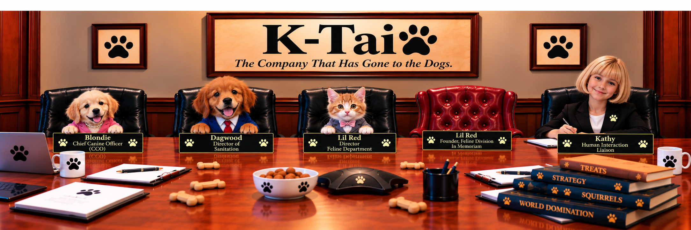

Shake Paws with Our Team

Blondie — Chief Canine Officer
- Spends hours on the porch surveying her outside property
- Believes commands are only a suggestion
- Does not play well with the vacuum cleaner
Dagwood — Director of Sanitation
- Very reliable in keeping the floor clean of any dropped food
- Makes sure dishes are clean before putting them in the dishwasher
- Very athletic, very good at counter surfing
Lil Red — Director, Feline Department
- Great-great-grandnephew of the Founder, Feline Division
- Does not care between a real mouse or a computer mouse
- Always stays meticulously groomed
Lil Red — Founder, Feline Division — In Memoriam
- Impressed all founding members by riding under the hood of Kathy's truck
- Survived with only a broken, completely healed hip
- Accidental neutering, we don't talk about it
Kathy — Human Interaction Liaison
- K-Tai would not exist if it wasn't for her dedication
- Thanks to opposable thumbs, she was able to hold the pen and
- Complete the application for charter